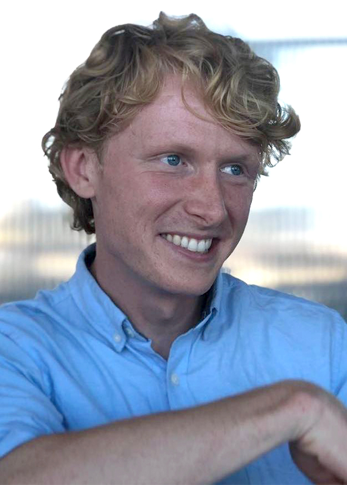

Chris Cox
I am a PhD researcher who is interested in anything related to sound, especially speech sounds. Most of my projects investigate how infants discover, explore, and learn the speech sounds of their first language. I use techniques from acoustic phonetics, Bayesian statistics, meta-science, and big-team science. If you are interested in having a chat, I'd love to hear from you.
About Me
I was born in England and moved to Denmark with my family when I was seven. I grew up with two languages: my Danish mother talked to me in Danish, and my English father spoke to me in English. My brother and I answered in both languages, and that's still how we do things. I grew up a little north of Copenhagen and moved back to England for my bachelor's and master's degrees. I'm now living in a collective in Copenhagen, writing up my thesis to hand it in in December. When I'm not in front of my laptop programming or writing, you can usually find me with a violin in my hand. Music is a free space for me, and I enjoy improvising and playing jazz, blues, and folk music. Here is a link to some videos: https://www.instagram.com/coxviolin/. Motto: Life's a cosmic joke, so we might as well make the punchline worth sharing.
Research Projects
My research looks at interactive dynamics between infants and caregivers during language development. One part of the equation concerns how caregivers adapt the acoustic features of their speech when talking to their infants (IDS). Another part of the equation revolves around the interactive dynamics between caregiver and infant, where each interactant reciprocally affects the other. There is no better domain to look at this than in turn-taking. Lastly, the infant should not be considered a passive agent in his or her own process of language development, and my research also looks at the active role played by the infant in exploring and systematizing speech sounds.
Infant-Directed Speech
Description of Project 1
Turn-Taking
Here I'm interested in the reciprocal relationships between caregivers and infants. We know that the response latencies of caregivers and infants are mutually dependent on each other, and we're doing our very best at modeling this process in a Bayesian framework. Another way to explore the dynamics of these models is to look at the non-human animal literature. We've started doing this and are writing up a systematic review of the models that have been proposed in this literature. This is with a view to gaining more insights into the structure and generative processes of turn-taking in the human world
Infant Vocalizations
Description of Project 3
Other Projects
I'm also really passionate about statistical methods and producing materials for better carrying out analyses. Here are some of my projects and thoughts on this:
Workshop on Bayesian Priors
Here is a link to our 2022 workshop on Bayesian inference. The workshop assumes a minimal statistical literacy (e.g., having used t-tests and correlations). The workshop is specifically aimed at Bayes-curious students and provides much discussion of how to define and assess priors. We focus on setting up a rigorous Bayesian workflow for your analysis: https://4ccoxau.github.io/PriorsWorkshop/
Power Analysis for ManyBabies5
I'm involved in statistical power for the ManyBabies project: https://psyarxiv.com/ck3vd/
Relations between Multilab Replications and Meta-Analyses
I'm interested in how these two sources of evidence relate to each other and their respective strengths and weaknesses. We have a project in preparation that is trying to combine and compare these two sources of evidence across key population and design characteristics of the underlying studies.
Publications
-
Journal Papers
- Cox, C., Dideriksen, C., Keren-Portnoy, T., Roepstorff, A., Christiansen, M. H., & Fusaroli, R. (2023). Infant-directed speech does not always involve exaggerated vowel distinctions: Evidence from Danish. Child Development, 00, 1–25 Link: DOI
- Cox, C., Bergmann, C., Fowler, E., Keren-Portnoy, T., Roepstorff, A., Bryant, G., & Fusaroli, R. (2023). A systematic review and Bayesian meta-analysis of the acoustic features of infant-directed speech. Nature Human Behaviour, 7(1), 114–133. Link: DOI
- Nguyen, V., Versyp, O., Cox, C., & Fusaroli, R. (2022). A systematic review and Bayesian meta-analysis of the development of turn-taking in adult-child vocal interactions. Child Development, 93(4), 1181-1200. Link: DOI
- Cox, C. M. M., Keren-Portnoy, T., Roepstorff, A., & Fusaroli, R. (2022). A Bayesian meta-analysis of infants' ability to perceive audio-visual congruence for speech. Infancy, 27(1), 67-96. Link: DOI
Contact Me
You can reach me at chris.mm.cox[at]gmail.com.